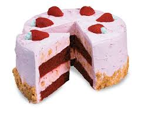

Recipe World
Magic Cake
Magic Cake is one of the tastiest cakes the world has ever known. Few have tried it and lived to tell about it, and these are their stories.
Ingredients
- 2 eggs
- 1 pound of sugar
- 3 sticks of butter
Directions
- Mix eggs, sugar, and butter in a large bowl
- Spread into a non-stick dish
- Let it sit at room temperature for 20 minutes
- Eat and enjoy!
